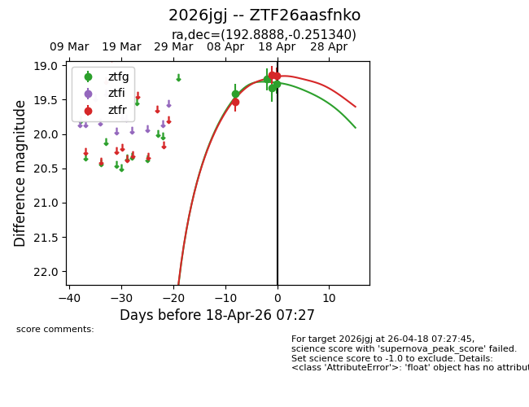
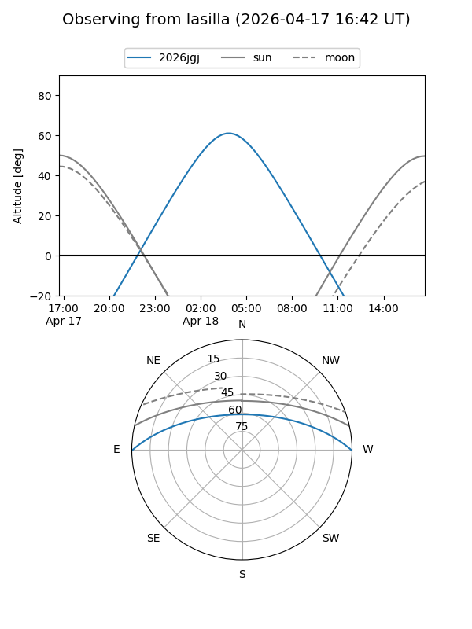
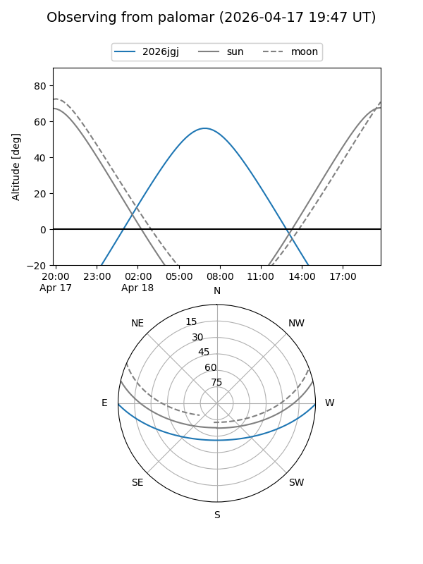

2026jgj
Target 2026jgj at 2026-04-18 07:31
Aliases and brokers:
FINK: link
Lasair: link
ALeRCE: link
TNS: link
YSE: link
alt names
ZTF26aasfnko (ztf,fink_ztf)
2026jgj (tns,yse)
Coordinates:
equatorial (ra, dec) = 192.8888,-0.25134
equatorial (HMS+DMS) = 12:51:33.32,-00:15:04.82
galactic (l, b) = (302.9958,+62.62039)
Flags:
Photometry:
last ztfg=19.27, ztfr=19.15
4 ztfg, 3 ztfr detections
Lightcurve

Visibility


Additional plots